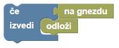

Pišek je našel še več rožnatih čokoladnih jajc. Tokrat jih bo skril v gnezda gosk.
Pod razdelkom Senzorji najdeš kocke, s katerimi preveriš, ali Pišek stoji na gnezdu ali pa na jajcu. Pod razdelkom Logika pa najdeš kocko za pogojne stavke. Skupaj jih lahko uporabiš, da Pišek dejanje izvede, samo če stoji na polju z jajcem:

Rešitev bo preverjena na dveh testih. Za rešitev tudi potrebuješ zanko.
Pišek se je skril in slišal hiitanje gosk in kokoši, ko so te našle čokoladna jajca. Pišku je ostalo še nekaj jajc, zato se je odločil presenetiti še račke.
Rešitev mora prestati dva testa.